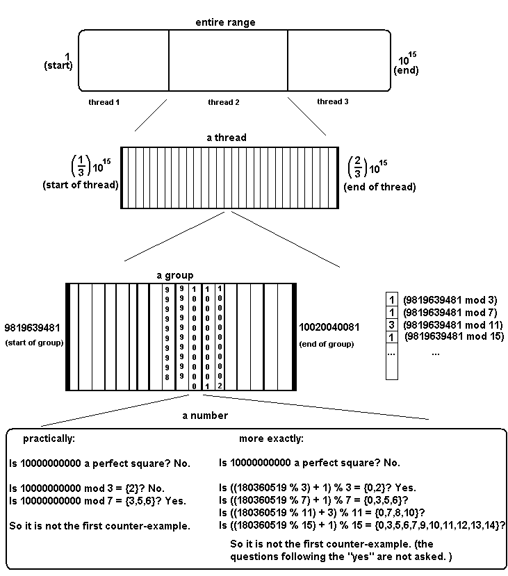

The Erdos–Straus conjecture, due to Paul Erdos and Ernst G. Straus, is a conjecture about the decomposability of 4/n into a sum of three fractions. Namely, the Erdos–Straus conjecture states that for all positive integers n, there exists positive integers a,b,c, such that 4/n = 1/a + 1/b + 1/c.
The proof of this conjecture remains elusive, meaning a counter-example may still exist.
Using a computer program and a few known theorems, Allen Swett has shown that no counter-example exists where 2 < n < 10^14. I show that no such n exists where 2 < n < 10^16.
Theorems used:
- The first counter-example is a prime number.
- If there exists an i such that n = -4D (mod 4i - 1), where D is a divisor of i^2, then n is not a counter-example.
- If n is a counter example, n = {1, 169, 289, 361, 529, 841,
961, 1369, 1681, 1849, 2041, 2209,
2521, 2641, 2689, 2809, 3361, 3481,
3529, 3721, 4321, 4489, 5041, 5161,
5329, 5569, 6169, 6241, 7561, 7681,
7921, 8089, 8761} mod 9240
Program source code:
The java
program to search for counter-examples.
The list of
filters. (Place in the same directory)
The
large modular identity. (20 mb file, pleace in the same directory)
The
program for generating the filters. (As explained in the outline, this program will output a slightly different filters.txt)
The
program for generating the large modular identity.
Program outline:
I will start by explaining the program in its most simple model, and subsequently explain the improvements made upon this model.
The program iterates between every integer n between 1 and 10^15. For each number, it checks 2 things. Is n a perfect square? If the answer is yes, then n is not the first counter-example because the first counter-example must be a prime number. We then ask: is there an i for which n = -4D (mod 4i - 1), where D is a divisor of i^2? If such an i exists, then n is not the first counter-example. If the answer to both of these questions is no, print out n, because it may be a counter-example.
When we ask "is there an i for which n = -4D (mod 4i - 1), where D is a divisor of i^2?", we are successively trying all possible i. There is much in this expression that can be pre-computed and stored in tables. For this reason, we limit ourselves to checking up to a constant i, say 10000. Then instead of calculating -4D (mod 4i - 1) for all values of D, we pre-compute these values. The file filters.txt contains the table of possible values of -4D (mod 4i - 1) for all i up to 10000.
We are now effectively asking "is there an i for which (n mod (4i - 1)) is equal to something in the i'th filter?" By defining a large boolean table S such that S[i][j] = true if j is something in the i'th filter, we can further shorten our question to "is there an i for which S[i][(n mod (4i - 1))] is true?". Once again, instead of computing 4i - 1 at each iteration, we can create a table called mod, for which mod[i] = 4i-1. This rephrases our question yet again to "is there an i for which S[i][(n % mod[i])] is true?" (In programming languages "%" usually means mod))
So we are checking all i's between 1 and 10000 to see if there is one for which S[i][(n % mod[i])] is true. However, the different S filters have different probabilities of being true. I've informally graphed the amount of n's for which the different S[i]'s are true, and have come up with an ordering for the first 100 which is much faster than the standard order of i=1,2,3,etc. This order is stored in the table order[j], such that order[1] = the first i to be checked, order[2] = second i, etc. Now our question is "for j=1 to 10000, is S[order[j]][(n % mod[order[j]])] ever true?"
We are taking the modulus of a very large number at every iteration of this loop, and for every number n. Taking these moduli is very time consuming, so we want to find a way to make this faster. We use the fact that if n = k + l, n mod m = (k mod m + l mod m) mod m. If we can split our large n into the sum of two numbers, one of which is small, and the other of which we already know it's modulus, we can perform n mod m as ((smallNumber mod m) + knownValue) mod m. We thus replace one large modulus operation with 2 small ones, an addition, and overhead for calculating the variable to be looked up. In practice, this can be faster. We thus split our search into many sub-searches of groups, where the base modulus of the group is known. Now we are asking: "for j=1 to 10000, is S[order[j]][((offset % mod[order[j]]) + baseMod[order[j]]) % mod[order[j]]] ever true?". It is not clear how large the size of the groups should be for optimal performance. I've found that 100000000 works well.
There are extra values that can be added to our list of filters. Adding more values without adding more filters does not increase the size of the set of filters, since they are stored as a 2d boolean array, and it with more "true" values inside this array, we are going to catch more n's faster. There are 2 ways of adding more values to the filters. We observe that if n is greater than 4i -1, and n mod 4i -1 = 0, that this means n is divisible by 4i-1. If n is divisible by 4i-1, it is not prime, therefore it is not the first counter-example. So, we can make all values of S[i][0] = true. In addition, if n is equal (mod 4i-1) to a multiple of a divisor of 4i-1 (except 1) then n is not prime, and so is not a counter example. I only added these values to the S filters for S(i<100), otherwise the filters.txt file gets massive.
In a very trivial way, the search is also split up into seperate threads, this speeds up the search on multi-core processors (such as the one I used).
At this point I present an approximate diagram of the program's search. (The most significant improvement is yet to come, directly below this diagram)

Now we have defined what is done for every n. We said at first that the search would check every number between 1 and 10^15. Of course, it is not necessary to check all of these numbers, as we have Theorem 3 which says only numbers equal to {1,169,...} mod 9240 could possibly be counter-examples. We could now check only the numbers which satisfy this identity. Instead, let's first create an even stronger identity by combining the first few S filters with the Ionascu-Wilson identity. The program set.java combines the first 9 S filters with the Ionascu-Wilson identity, and outputs a large text file containing the new identity. This text file is taken as input to ESC.java and is used to determine which numbers to skip. The Ionascu-Wilson identity lets us skip 0.9964285713% of numbers. our new large modular identity composed of S(1) up to S(8), with the Ionascu-Wilson filter lets us skip 0.9983720697% of numbers, more than twice as many.
Program output:
(With 10^12 it executes in 37 seconds)
H:\public_html\ESC>java -Xmx800m ESC 2 1000000000000 5000 1000000000 2 1000
Loading the S filters... MAXS=10000
Loading the skip amounts... 1126568520
m[0] = 1
m[1833974] = 1126568041
main: Starting
main: There are 0 candidates between 2 and 1000000000000.
main: 47217 were proven to be perfect squares.
main: 900367620 were proven by a modular identity S<5000.
main: Running time: 37265 ms.
main: The candidates are: []
Proofs:
Theorem 1:
M. Monks and A. Velingker: "If q is a prime dividing p then ( (p/q) x, (p/q) y, (p/q) z) is a solution to [the conjecture] if and only if (x, y, z) is a solution to [the conjecture] with p = q. Thus, the conjecture is true for all p > 1 if and only if it is true for all prime p"
Theorem 2:
Define the set of numbers S(i) as the values A which satisfy WA + X == 0 (mod 4i-1) with positive divisors X and W of i. For all i, If n is congruant to an element of S(i) (mod 4i-1), n is not a counter-example. (
link to proof)
Swett also demonstrates that for n > 0, if T(n) is the set of least residues, mod 4i-1, of the elements of { -4 D | D is a positive divisor of i^2 }. Then S(i) = T(i). Thus, S(i) is the set of numbers x between 0 and 4i-1 such that x = -4D (mod 4i-1). (
link to proof)
Swett shows that if n is congruant to an element of S(i) (mod 4i-1) for any i, n is not a counter-example. So, by the alternate definition of S(i), if (n = -4D (mod 4i-1)) (mod 4i-1) with D a divisor of i^2, and for -4D between 0 and 4i-1, n is not a counter-example. Or, more simply, if n = -4D (mod 4i-1) with D a divisor of i^2, n is not a counter-example.
Theorem 3:
This is simply Theorem 2.2 from Eugen J. Ionascu, Andrew Wilson
http://arxiv.org/abs/1001.1100
TO DO:
Run the program for 10^16. It should take about 50 hours on a quad-core.
The set.java doesn't add S(5) to our large modular identity. There's no real reason for this, and it would probably work better if it did.
Sorting the S's in an optimal order has to be done manually, and is different with different parameters. If it were automatic, we could more easily optimize the paramaters for a faster search.
The seperation of numbers into groups was done to save time on calculating mods. At first, it saved much time, but after the introduction of the large modular identity, it was found that the most optimal group size is as large as possible. It may be even better to eliminate groups all together.
References:
Allen Swett,
http://math.uindy.edu/swett/esc.htm
Eugen J. Ionascu, Andrew Wilson,
http://arxiv.org/abs/1001.1100
M. Monks and A. Velingker,
On the Erdos-Straus Conjecture: Properties of solutions to its underlying Diophantine equation
About:
My name is Alexandre Laplante. I am a Computer Science student at the University of Ottawa. My school email is
alapl051@uottawa.ca.